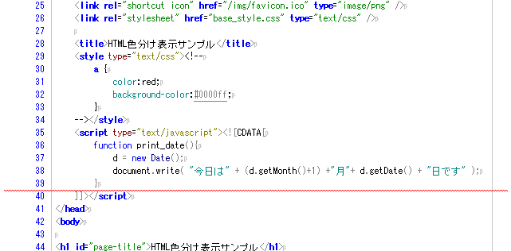
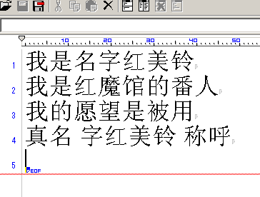
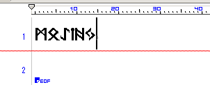

出会いとか
HTML手書き人間の自分としては、エディターとオハナシしている時間は馬鹿にならない分量あるわけで、便利なモノはないかと、細かく入れ替えて楽しんでいたのですが
そんな事をやっているウチに「結局、機能を増やすと重くなるし、軽くすると役に立たないわけだから、プログラムで自由に機能を追加、削除出来るようなエディターとか出来ないかな。」
「結局、そうなると言語はJavaScriptかなぁ、PhtotoShopからWindowsまでサポートしている、唯一まともに標準ができていると言えるスクリプト言語だし…」
みたいなことを考えていたのですが、いたんですよね。同じ事考えていた馬鹿みたいな人。そういう訳で、見つけて以降すっかり惚れ込んでしまって、嗚呼、早くコレが自由に使える日が来ないかなぁと心待ちにしていたわけですよ
正直、バージョン0.5あたりで色分けを実装して以降の萌ディタは、機能的には他のエディタに全く劣らない性能を出し初めています。
目の前ですごいソフトがゆっくりと育っていくのは観察しているだけでも楽しいもんですよ
萌ディタの凄いところ
萌ディタの凄いところを上げるなら、その基礎の完成度。大きくは次の２つですね
- 内部的にUTF-16に対応
- 全ての行動がJavaScriptで記述されている
この２点に繋がって、他のエディターにはない多くの利点があります。順に上げて行くなら
利点
- Javascriptで自由に機能が拡張できる
- Windowsエディタ中、最強クラスの色分け機能がある
- UTF-16の範囲で、様々な他言語を入力できる
- その機能と拡張性に比べてみて、以外に軽い
欠点
- 逆にマニアックな設定は、JavaScriptを覚えないとなかなか増やせない
- 所詮はα版程度の安定性
- 軽量高速なエディターには速度面では叶わない
とかになります。正直、安定性を除けば萌ディタは強豪ひしめくエディター界でも選ばれる価値のあるエディターになっています。
もし興味があるなら触ってみてください。
色分けとか
ここで一つ、萌ディタの大きなウリの一つである色分け機能のサンプルを表示してみましょう

こんなカンジで、現在の萌ディタでは<style>～</style>で囲まれた範囲ではモードが切り替わって、スタイルシートを強調表示、<script>～</script>の範囲内ではJavaScriptを強調表示してみせます（ちなみに現段階でPHPも対応していますし、スクリプトを書き足していけば無限に拡張可能です
正直、自分はこれができるエディタを他に知りません。これだけでも萌ディタに切り替える価値があるとは思いませんか？
多言語対応
MOEditorは、ソフトの基本部分からUTF-16対応なので、かなり色々な言語が使えます、例えば簡体中国語、たとえばルーン文字
 一応、フォントがＯＳに入っていることが条件なんですけどね